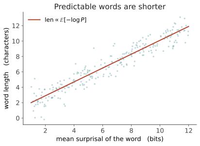

本页目录
信息 III · 通信效率塑造语言
对标：Piantadosi 等 2011（词长）、Gibson 等 2019《Lang. as efficient communication》、Levy & Jaeger 2007（UID）、Futrell 等（DLM）、Zipf 1949（省力）｜ 前置：info-01、info-02 ｜ 证据地位：【实】——这些是可测量、跨语言重复的定律；它们把 ling-03 功能派的"效率"从形容词变成了可算的量。 中心思想：语言的形状不是任意的，它被"在有噪声、有限信道里高效沟通"这个压力雕刻。 这一页是功能主义（ling-03）拿到数学身份证的地方——三条效率律，每条都能证伪、都能在语料上测。
1. 语言是一个带约束的优化问题
把说话建模成：在一条有噪声、容量有限的信道里，用最小代价可靠传递意义（Shannon 的信道编码问题，套到语言上）。两个方向拉锯：
- 说话人省力 → 想短、想少、想省音（趋向压缩）；
- 听话人可靠 → 想清楚、想抗噪、想低歧义（趋向冗余）。
好的语言 = 这对张力的帕累托前沿上的一个点。 下面三条律，分别是这个优化在词长、信息分布、语序三个层面的可测后果。它们共同把 ling-03 那句"结构是使用压力的沉淀"变成了能算的预测。
2. 律一：常用的说短（Zipf 简省律的现代版）
Zipf 简省律：高频词更短（the, of, a, is）。但 Piantadosi–Tily–Gibson 2011 给了更准的版本——
词长不是最优编码于频率，而是最优编码于平均可预测性（surprisal）。 也就是：一个词该多长，取决于它在上下文中的平均信息量，而非它的裸频率。

为什么深刻：这几乎就是 Shannon 无噪编码定理（码长 \(\approx\) 自信息）的自然语言实证——语言像是在几万年里自发逼近了最优前缀码。注意它用的是 surprisal 而非频率：这正好把 info-02 的量接了进来，三页信息论在此闭环。
3. 律二：把信息摊匀（均匀信息密度 UID）
UID 假说（Levy & Jaeger）：说话人倾向于让信息均匀地流过时间——避免某一刻信息尖峰（听者跟不上、易出错）或信息低谷（浪费信道）。既然加工代价 \(\propto\) surprisal（info-02），把 surprisal 摊平就是让加工匀速、总代价（若代价是 surprisal 的凸函数）最小。
可测的后果——说话人在可选处，用冗余去削峰填谷： - 信息密度高的地方加词："I believe that he left"里的可选 "that"，更常出现在后文难预测时（补一个高概率词，稀释尖峰）。 - 可预测处缩音/省略（弱读、脱落、缩写）。 - 语速、停顿、重音都随局部信息密度调整。
UID 把 info-02 的加工定律升级成一条设计原则：不仅"意外的词难读"，而且"语言主动重排自己，避免让你连续吃到意外"。
4. 律三：相关的放近（依存长度最小化 DLM）
句子是线性的，但意义是结构的（ling-02 的树）。把树"压平"成词序时，有依存关系的词之间的线性距离要付记忆代价（跨越的距离越长，工作记忆负担越大，surprisal 越难维持）。
DLM 假说（Gibson, Futrell 等）：语言倾向于最小化总依存长度——让语法相关的词尽量靠近。可测证据（强【实】）： - 跨 37+ 种语言的依存树语料，真实语序的总依存长度显著短于随机重排的基线； - 语序共性（如形容词紧贴名词、助动词靠近主动词）大量可由 DLM 预测——不需要 UG 参数（回击 ling-02，支持 ling-03 功能解释）； - 这也解释了中心嵌套（center-embedding）为何难："the rat the cat the dog chased killed ate"——嵌套把依存拉长到爆掉工作记忆。
5. 三律合一：效率前沿上的语言
三条律指向同一件事：语言的词汇、韵律、语序，都坐在"沟通效率"的优化解附近。
| 律 | 优化什么 | 可测量 | 反驳了什么 |
|---|---|---|---|
| 简省律（词长） | 码长匹配信息量 | 词长 vs 平均 surprisal | "形式任意" |
| UID | 信息随时间均匀 | 局部 surprisal 方差 | "说话不优化听者" |
| DLM | 记忆/线性化代价 | 依存长度 vs 随机基线 | "语序共性需 UG" |
对轴 I 的意义：这三律是涌现端最有力的弹药——大量语言"共性"可以不诉诸先天蓝图，而由通用的沟通/加工效率推出。但别过度收兵：效率解释了倾向，没解释离散范畴的生成机制（为什么是这套语法而非另一套同样高效的）——生成派的形式引擎在这块仍有话说（ling-03 §5 的软肋）。
6. 要点与思考
思考 1（效率论证的循环风险） "因为高效所以这样"若不独立度量效率，就是循环论证。这三律之所以是【实】而非【争】，正因为它们先独立定义了可算的代价（码长、surprisal 方差、依存长度），再去语料里验证——这就是把功能派主张从【争】拉到【实】的标准动作，也是你做研究该学的：先把"好"变成一个能算的数，再谈优化。
思考 2（信道视角看你的直觉） 你最初的直觉是"语言是压缩并传递经验的信道"。这一页给了它三个可操作的量。反过来问：一个没有噪声、无限带宽、无记忆限制的沟通者，会演化出什么样的语言？——大概率不是人类语言。人类语言的很多特征，是信道缺陷的印记。这个反事实，是你思考"语言为何长这样"的好支点（也接线四思想实验）。
思考 3（LLM 有没有这些律） LLM 的信道条件和人不同（超长上下文、无声道、算力充裕）。它生成的文本是否服从 UID、DLM？若不服从，说明这些律是人类信道特有的；若服从，说明它们是语料统计里就编码好的、模型照单学去了。这是个你能直接测的小课题（labs 可扩展）。\(\blacksquare\)
下一页：信息 IV——三种压缩与它的边界。把"预测""学习""意义"统一到一个词下：压缩。我们讲清预测≈压缩的深刻等价，也讲清压缩为什么不等于意义——这条边界，是全课甲乙两问的分水岭。